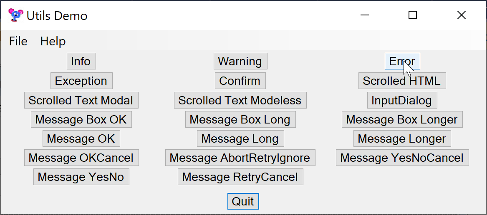
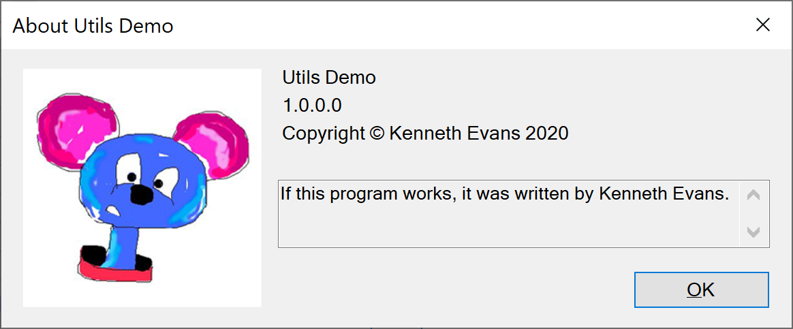

Utils Demo is an application to demonstrate some of the utilities in the Utils class library.
This is a screen shot of the Utils Demo interface. There are buttons to demonstrate and test the various utilities.

This is a C# class library. You can use it in your project by including Utils.dll as a reference.
This class primarily provides error handling by bringing up an appropriate dialog.
It includes:
This is a class that provides an About dialog. It has an image and is designed to use information such as ProductName, Version, Copyright, CompanyName, and Description from the Assembly.

Usage example:
Assembly assembly = Assembly.GetExecutingAssembly();
Image image = null;
try {
image = Image.FromFile(@".\Help\UtilsDemo.256x256.png");
} catch (Exception ex) {
Utils.excMsg("Failed to get AbutBox image", ex);
}
AboutBox dlg = new AboutBox("About Utils Demo", image, assembly);
dlg.ShowDialog();
This is a dialog that displays scrolled text. It has Clear, Cancel, and Ok buttons. It can be used as both modal and modeless.
Modless Example
private static ScrolledTextDialog scrolledText;
DateTime now = new DateTime();
if (scrolledText == null) {
scrolledText = new ScrolledTextDialog(
Utils.getDpiAdjustedSize(this, new Size(400, 400)),
"Start of Scrolled Text");
scrolledText.appendTextAndNL("OnScrolledTextClick (First Time)" + now);
}
scrolledText.ButtonCancel.Visible = false;
scrolledText.appendTextAndNL(NL + "OnScrolledTextClick " + now);
scrolledText.Visible = true;
Modal Example
string msg = "Some information;
ScrolledTextDialog dlg = new ScrolledTextDialog(
Utils.getDpiAdjustedSize(this, new Size(400, 400)),
"Example Scrolled Text");
dlg.appendText(msg);
DialogResult res = dlg.ShowDialog();
if (res == DialogResult.OK) {
Utils.infoMsg("You clicked OK");
} else if (res == DialogResult.Cancel) {
Utils.infoMsg("You clicked Cancel");
}
This is a dialog that displays an HTMLweb page as would be used for an Overview item on the Help menu. The dialog is a simple web browser with Back and Forward buttons. It can follow links.
Usage Example
It is assumed there is a folder named Help in the bin directory which has files Overview.html as well as images, CSS, and other items as needed by Overview.html.
private static ScrolledHTMLDialog overviewDlg;
if (overviewDlg == null) {
MainForm app = (MainForm)FindForm().FindForm();
Utils.getDpiAdjustedSize(app, new Size(800, 600)),
"Overview", @"Help\Overview.html");
overviewDlg.Show();
} else {
overviewDlg.Visible = true;
}
This is a class that duplicates much of what MessageBox does. Much of
the implementation is heavily borrowed from FlexibleMessageBox:
Author: Jörg Reichert(public @jreichert.de)
Contributors: Thanks to: David Hall, Roink
Version: 1.3
Published at: http://www.codeproject.com/Articles/601900/FlexibleMessageBox
Features:
- It can be simply used instead of MessageBox since all important
static "Show" methods are supported
- It can be resized and the content is correctly word-wrapped
- It tries to auto-size the width to show the longest text row
- It never exceeds the current desktop working area
- It displays a vertical scrollbar when needed
- It supports hyperlinks in text
MessageDialog is a different implementation from FlexibleMessageBox. The interface is a little more different from MessageBox and there is a context menu. Some issues with FlexibleMessageBox have been fixed. These include
Because the interface is identical to MessageBox, you can add MessageDialog to your project and use the it almost everywhere you use a standard MessageBox. It is only necessary to change the class name.
It has a context menu for Copy unlike MessageBox, and Copy only copies the text, not what Ctrl-C does in MessageBox.. It does not center on the screen as does MessageBox, and the layout and default font are a little different from MessageBox.
There are static fields for FONT, MAX_WIDTH_FACTOR, and MAX_HEIGHT_Factor that can be used to override the defaults.
Usage examples:
MessageDialog.Show("Some text");
MessageDialog.Show("Some text", "A caption");
MessageDialog.Show("Some text with a link: www.google.com",
"Some caption",
MessageBoxButtons.AbortRetryIgnore,
MessageBoxIcon.Information,
MessageBoxDefaultButton.Button2);
var dialogResult = MessageDialog.Show(
"Do you know the answer to life the universe and everything?",
"One short question", MessageBoxButtons.YesNo);